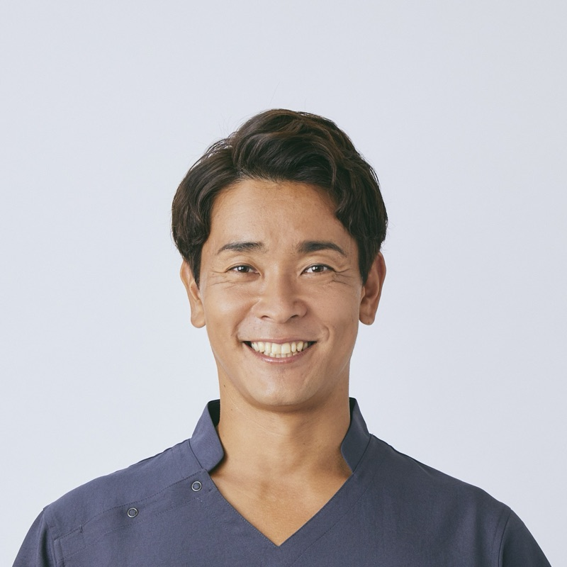

無料オンラインセミナー（約30分）
AIは一応使っている。
でも仕事は去年と同じ。
何が足りないのか、自分でも言えない。
だから、どこから手をつければいいかも分からない。
――そんな中小企業の経営者の方へ。
使うAIから、
共に働くAIへ
AIの進化に追いつけなかった時間の、取り戻し方が見える30分

お話しする人：氏原大貴LINEで友だち追加をすると、視聴のご案内が届きます。
配信はブロックでいつでも止められます。
このセミナーで見えてくること
-
AIを「相談相手」で終わらせず、一緒に仕事をしてくれる仲間として使うとは、どういうことかが、見えてきます。
-
自分はなぜAI時代の流れに追いつけなかったのか、理由が明確になります。
-
AIで自分のやりたいことが加速していく、その道筋が見えてきます。
-
AIとの付き合い方を、見直すきっかけになります。
見終わる頃には、自分の仕事のどこが止まっているか、たぶん一か所は指させます。
手順の話はしません。そこが分かれば、次の一歩は自分で選べるからです。
※セミナーでお見せする実物は、講師個人の体験です。成果をお約束するものではありません。
セミナーの概要
- 形式
- オンライン（録画）
- 時間
- 約30分
- 参加費
- 無料
- 視聴期間
- 登録から48時間
- 受け取り
- 友だち追加のあと、LINEに自動で届きます
セミナーの後半で、有料講座のご案内があります。ご案内を聞いてから決めていただけます。
お申し込みの受付も、登録から48時間です。
ご覧いただく流れ
-
LINEで友だち追加
下のボタンから、LINEの友だち追加をしてください。メールアドレスの入力はありません。
-
すぐに視聴のご案内が届きます
友だち追加のあと、LINEに視聴のご案内が自動で届きます。
-
48時間以内にご覧ください
登録から48時間のあいだに、30分ほど時間を取れるときに、落ち着いてご覧ください。合わなければ、途中で閉じていただいて構いません。
LINEで友だち追加をすると、視聴のご案内が届きます。
配信はブロックでいつでも止められます。
合う方、合わない方
合うのは、こんな方です
- 見終わったあとで、一度は自分の手で動かしてみようと思える方
- 自分の事業のことを、自分の言葉で伝えたい方
- うまくいかなくても、もう一度だけ試してみる気持ちが残っている方
向いていないかもしれない方
- 全部をお任せで済ませたい方
- 考えるところまで、AIに代わってほしい方
お任せの使い方も、ひとつの使い方です。そういう頼み方で十分に回る仕事も、たくさんあると思います。
何を選ぶかは、見てから決めていただけたらと思っています。
お話しする人
氏原大貴
病院勤務を経て独立し、整体院などの店舗を経営しています。
理学療法士として大切にしてきたのは、代わりに歩くことではなく、自分の足で歩けるようになるまで、隣にいることです。
AIの進化に追いつけなかった時間が、私にもありました。AIには長いあいだ「ただの依頼」をしていて、便利なのに事業は前に進みませんでした。手前にあった理由が分かってから、AIは事業を共に伸ばす仲間になりました。このセミナーでは、その実物をお見せします。
ご登録の前に
参加費・お支払いについて
登録は無料です。クレジットカード情報の入力は必要ありません。
配信について
LINEで友だち追加をしていただいた方に、セミナーの視聴のご案内と、関連するご連絡をお送りします。セミナーの後半では、有料講座のご案内があります。
配信の止め方
配信は、LINEでこのアカウントをブロックすることで、いつでも止められます。
個人情報の取り扱い
友だち追加により当方が受け取る情報（LINEの表示名など）は、セミナーのご案内と関連するご連絡のためにのみ使い、法令に基づく場合を除いて第三者に提供しません。詳しくはプライバシーポリシーをご覧ください。
お問い合わせ
ujihara0903@gmail.com
使うAIから、共に働くAIへ。
決めるのは、あなたです。
LINEで友だち追加をすると、視聴のご案内が届きます。
配信はブロックでいつでも止められます。